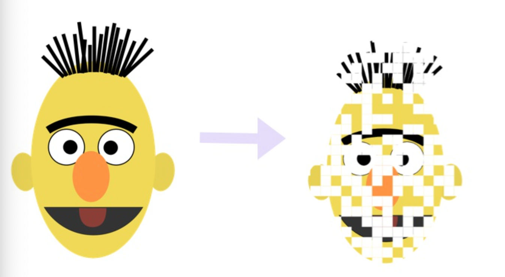
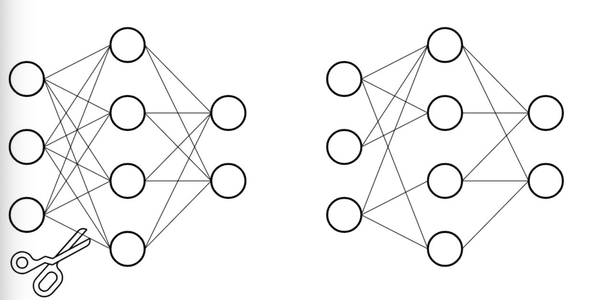

模型剪枝的概念和理论¶
学习目标
- 理解什么是模型剪枝.
- 掌握模型剪枝的基本操作.

1.什么是模型的剪枝¶
- 基于深度神经网络的大型预训练模型拥有庞大的参数量, 才能达到SOTA的效果. 但是我们参考生物的神经网络, 发现却是依靠大量稀疏的连接来完成复杂的意识活动.
- 仿照生物的稀疏神经网络, 将大型网络中的稠密连接变成稀疏的连接, 并同样达到SOTA的效果, 就是模型剪枝的原动力.

- Pytorch中对模型剪枝的支持在torch.nn.utils.prune模块中, 分以下几种剪枝方式:
- 对特定网络模块的剪枝(Pruning Model).
- 多参数模块的剪枝(Pruning multiple parameters).
- 全局剪枝(GLobal pruning).
- 用户自定义剪枝(Custom pruning).
- 注意: 保证Pytorch的版本在1.4.0以上, 支持剪枝操作.
2.对特定网络模块的剪枝(Pruning Model).¶
- 首先导入工具包:
import torch
from torch import nn
import torch.nn.utils.prune as prune
import torch.nn.functional as F
- 创建一个网络, 我们以经典的LeNet来示例:
device = torch.device("cuda" if torch.cuda.is_available() else "cpu")
class LeNet(nn.Module):
def __init__(self):
super(LeNet, self).__init__()
# 1: 图像的输入通道(1是黑白图像), 6: 输出通道, 3x3: 卷积核的尺寸
self.conv1 = nn.Conv2d(1, 6, 3)
self.conv2 = nn.Conv2d(6, 16, 3)
self.fc1 = nn.Linear(16 * 5 * 5, 120) # 5x5 是经历卷积操作后的图片尺寸
self.fc2 = nn.Linear(120, 84)
self.fc3 = nn.Linear(84, 10)
def forward(self, x):
x = F.max_pool2d(F.relu(self.conv1(x)), (2, 2))
x = F.max_pool2d(F.relu(self.conv2(x)), 2)
x = x.view(-1, int(x.nelement() / x.shape[0]))
x = F.relu(self.fc1(x))
x = F.relu(self.fc2(x))
x = self.fc3(x)
return x
model = LeNet().to(device=device)
- 调用:
module = model.conv1
print(list(module.named_parameters()))
- 输出结果:
[('weight', Parameter containing:
tensor([[[[ 0.0853, -0.0203, -0.0784],
[ 0.3327, -0.0904, -0.0374],
[-0.0037, -0.2629, -0.2536]]],
[[[ 0.1313, 0.0249, 0.2735],
[ 0.0630, 0.0625, -0.0468],
[ 0.3328, 0.3249, -0.2640]]],
[[[ 0.1931, -0.2246, 0.0102],
[ 0.3319, 0.1740, -0.0799],
[-0.0195, -0.1295, -0.0964]]],
[[[ 0.3005, 0.2704, 0.3162],
[-0.2560, 0.0295, 0.2605],
[-0.1056, -0.0730, 0.0436]]],
[[[-0.3205, 0.1927, -0.0761],
[ 0.0142, -0.0562, -0.3087],
[ 0.1202, 0.1119, -0.1336]]],
[[[ 0.0568, 0.1142, 0.3079],
[ 0.2000, -0.1661, -0.2935],
[-0.1652, -0.2606, -0.0559]]]], device='cuda:0', requires_grad=True)), ('bias', Parameter containing:
tensor([ 0.1085, -0.1044, 0.1366, 0.3240, -0.1522, 0.1630], device='cuda:0',
requires_grad=True))]
- 再打印一个特殊的属性张量
print(list(module.named_buffers()))
- 输出结果
# 这里面打印出一个空列表, 至于这个空列表代表什么含义? 剪枝操作后同学们就明白了!
[]
- 直接调用prune函数对模型进行剪枝操作:
# 第一个参数: module, 代表要进行剪枝的特定模块, 之前我们已经制定了module=model.conv1,
# 说明这里要对第一个卷积层执行剪枝.
# 第二个参数: name, 指定要对选中的模块中的哪些参数执行剪枝.
# 这里设定为name="weight", 意味着对连接网络中的weight剪枝, 而不对bias剪枝.
# 第三个参数: amount, 指定要对模型中多大比例的参数执行剪枝.
# amount是一个介于0.0-1.0的float数值, 或者一个正整数指定剪裁掉多少条连接边.
prune.random_unstructured(module, name="weight", amount=0.3)
- 调用:
print(list(module.named_parameters()))
print(list(module.named_buffers()))
- 输出结果:
[('bias', Parameter containing:
tensor([ 0.1861, 0.2483, -0.3235, 0.0667, 0.0790, 0.1807], device='cuda:0',
requires_grad=True)), ('weight_orig', Parameter containing:
tensor([[[[-0.1544, -0.3045, 0.1339],
[ 0.2605, -0.1201, 0.3060],
[-0.2502, -0.0023, -0.0362]]],
[[[ 0.3147, -0.1034, -0.1772],
[-0.2250, -0.1071, 0.2489],
[ 0.2741, -0.1926, -0.2046]]],
[[[-0.1022, -0.2210, -0.1349],
[-0.2938, 0.0679, 0.2485],
[ 0.1108, -0.0564, -0.3328]]],
[[[-0.0464, 0.0138, 0.0283],
[-0.3205, 0.0184, 0.0521],
[ 0.2219, -0.2403, -0.2881]]],
[[[ 0.3320, -0.0684, -0.1715],
[-0.0381, 0.1819, 0.1796],
[-0.3321, -0.2684, -0.0477]]],
[[[-0.1638, -0.0969, 0.0077],
[ 0.0906, 0.2051, 0.2174],
[-0.2174, 0.1875, -0.2978]]]], device='cuda:0', requires_grad=True))]
[('weight_mask', tensor([[[[1., 0., 1.],
[1., 0., 1.],
[1., 0., 1.]]],
[[[0., 0., 0.],
[0., 1., 1.],
[0., 0., 1.]]],
[[[1., 1., 1.],
[0., 1., 1.],
[1., 1., 1.]]],
[[[1., 1., 1.],
[1., 1., 1.],
[1., 1., 1.]]],
[[[1., 1., 1.],
[1., 0., 1.],
[1., 1., 0.]]],
[[[1., 0., 1.],
[0., 0., 1.],
[1., 1., 0.]]]], device='cuda:0'))]
- 结论: 模型经历剪枝操作后, 原始的权重矩阵weight参数不见了, 变成了weight_orig. 并且刚刚打印为空列表的module.named_buffers(), 此时拥有了一个weight_mask参数.
- 这时打印module.weight属性值, 看看有什么启发?
print(module.weight)
- 输出结果:
tensor([[[[-0.1544, -0.0000, 0.1339],
[ 0.2605, -0.0000, 0.3060],
[-0.2502, -0.0000, -0.0362]]],
[[[ 0.0000, -0.0000, -0.0000],
[-0.0000, -0.1071, 0.2489],
[ 0.0000, -0.0000, -0.2046]]],
[[[-0.1022, -0.2210, -0.1349],
[-0.0000, 0.0679, 0.2485],
[ 0.1108, -0.0564, -0.3328]]],
[[[-0.0464, 0.0138, 0.0283],
[-0.3205, 0.0184, 0.0521],
[ 0.2219, -0.2403, -0.2881]]],
[[[ 0.3320, -0.0684, -0.1715],
[-0.0381, 0.0000, 0.1796],
[-0.3321, -0.2684, -0.0000]]],
[[[-0.1638, -0.0000, 0.0077],
[ 0.0000, 0.0000, 0.2174],
[-0.2174, 0.1875, -0.0000]]]], device='cuda:0',
grad_fn=<MulBackward0>)
- 结论: 经过剪枝操作后的模型, 原始的参数存放在了weight_orig中, 对应的剪枝矩阵存放在weight_mask中, 而将weight_mask视作掩码张量, 再和weight_orig相乘的结果就存放在了weight中.
- 注意: 剪枝操作后的weight已经不再是module的参数(parameter), 而只是module的一个属性(attribute).
我们可以对模型的任意子结构进行剪枝操作, 除了在weight上面剪枝, 还可以对bias进行剪枝.
# 第一个参数: module, 代表剪枝的对象, 此处代表LeNet中的conv1
# 第二个参数: name, 代表剪枝对象中的具体参数, 此处代表偏置量
# 第三个参数: amount, 代表剪枝的数量, 可以设置为0.0-1.0之间表示比例, 也可以用正整数表示剪枝的参数绝对数量
prune.l1_unstructured(module, name="bias", amount=3)
# 再次打印模型参数
print(list(module.named_parameters()))
print('*'*50)
print(list(module.named_buffers()))
print('*'*50)
print(module.bias)
print('*'*50)
- 输出结果
[('weight_orig', Parameter containing:
tensor([[[[-0.0159, -0.3175, -0.0816],
[ 0.3144, -0.1534, -0.0924],
[-0.2885, -0.1054, -0.1872]]],
[[[ 0.0835, -0.1258, -0.2760],
[-0.3174, 0.0669, -0.1867],
[-0.0381, 0.1156, 0.0078]]],
[[[ 0.1416, -0.2907, -0.0249],
[ 0.1018, 0.1757, -0.0326],
[ 0.2736, -0.1980, -0.1162]]],
[[[-0.1835, 0.1600, 0.3178],
[ 0.0579, -0.0647, -0.1039],
[-0.0160, -0.0715, 0.2746]]],
[[[-0.2314, -0.1759, -0.1820],
[-0.0594, 0.2355, -0.2087],
[ 0.0216, 0.0066, -0.0624]]],
[[[-0.2772, 0.1479, -0.0983],
[-0.3307, -0.2360, -0.0596],
[ 0.2785, 0.0648, 0.2869]]]], device='cuda:0', requires_grad=True)), ('bias_orig', Parameter containing:
tensor([-0.1924, -0.1420, -0.0235, 0.0325, 0.0188, 0.0120], device='cuda:0',
requires_grad=True))]
**************************************************
[('weight_mask', tensor([[[[0., 0., 0.],
[1., 1., 1.],
[1., 0., 1.]]],
[[[1., 0., 1.],
[1., 0., 1.],
[1., 0., 1.]]],
[[[1., 1., 0.],
[1., 1., 1.],
[1., 1., 1.]]],
[[[1., 1., 1.],
[1., 0., 0.],
[0., 1., 0.]]],
[[[1., 1., 1.],
[1., 1., 1.],
[0., 1., 1.]]],
[[[1., 1., 1.],
[0., 0., 1.],
[1., 1., 0.]]]], device='cuda:0')), ('bias_mask', tensor([1., 1., 0., 1., 0., 0.], device='cuda:0'))]
**************************************************
tensor([-0.1924, -0.1420, -0.0000, 0.0325, 0.0000, 0.0000], device='cuda:0',
grad_fn=<MulBackward0>)
**************************************************
- 结论: 在module的不同参数集合上应用不同的剪枝策略, 我们发现模型参数中不仅仅有了weight_orig, 也有了bias_orig. 在起到掩码张量作用的named_buffers中, 也同时出现了weight_mask和bias_mask.
- 序列化一个剪枝模型(Serializing a pruned model):
# 对于一个模型来说, 不管是它原始的参数, 拥有的属性值, 还是剪枝的mask buffers参数
# 全部都存储在模型的状态字典中, 即state_dict()中.
# 将模型初始的状态字典打印出来
print(model.state_dict().keys())
print('*'*50)
# 对模型进行剪枝操作, 分别在weight和bias上剪枝
module = model.conv1
prune.random_unstructured(module, name="weight", amount=0.3)
prune.l1_unstructured(module, name="bias", amount=3)
# 再将剪枝后的模型的状态字典打印出来
print(model.state_dict().keys())
- 输出结果:
odict_keys(['conv1.weight', 'conv1.bias', 'conv2.weight', 'conv2.bias', 'fc1.weight', 'fc1.bias', 'fc2.weight', 'fc2.bias', 'fc3.weight', 'fc3.bias'])
**************************************************
odict_keys(['conv1.weight_orig', 'conv1.bias_orig', 'conv1.weight_mask', 'conv1.bias_mask', 'conv2.weight', 'conv2.bias', 'fc1.weight', 'fc1.bias', 'fc2.weight', 'fc2.bias', 'fc3.weight', 'fc3.bias'])
- 关键一步: 对模型执行剪枝remove操作.
- 通过module中的参数weight_orig和weight_mask进行剪枝, 本质上属于置零遮掩, 让权重连接失效.
- 这个remove是无法undo的, 也就是说一旦执行就是对模型参数的永久改变.
- 执行remove操作的演示代码:
# 打印剪枝后的模型参数
print(list(module.named_parameters()))
print('*'*50)
# 打印剪枝后的模型mask buffers参数
print(list(module.named_buffers()))
print('*'*50)
# 打印剪枝后的模型weight属性值
print(module.weight)
print('*'*50)
# 执行剪枝永久化操作remove
prune.remove(module, 'weight')
print('*'*50)
# remove后再次打印模型参数
print(list(module.named_parameters()))
print('*'*50)
# remove后再次打印模型mask buffers参数
print(list(module.named_buffers()))
print('*'*50)
- 输出结果:
[('weight_orig', Parameter containing:
tensor([[[[ 0.1668, 0.0369, -0.2930],
[-0.2630, -0.1777, -0.1096],
[ 0.0481, -0.0898, 0.1920]]],
[[[ 0.0729, 0.1445, -0.0471],
[ 0.1525, 0.2986, 0.2602],
[-0.0929, -0.2725, -0.0069]]],
[[[-0.2006, -0.2577, 0.2754],
[ 0.0999, 0.2106, -0.0046],
[-0.2813, -0.2794, -0.0580]]],
[[[-0.2944, -0.2214, -0.0795],
[-0.0773, 0.2931, -0.2249],
[-0.0796, -0.2343, -0.0457]]],
[[[-0.1965, 0.2550, 0.2606],
[ 0.0213, -0.2839, 0.2037],
[-0.2068, -0.0507, -0.3097]]],
[[[ 0.0030, 0.2340, -0.1122],
[-0.0302, -0.0261, 0.1168],
[ 0.0927, 0.1553, 0.1167]]]], device='cuda:0', requires_grad=True)), ('bias_orig', Parameter containing:
tensor([ 0.1147, 0.2439, -0.1753, -0.2578, -0.0994, 0.0588], device='cuda:0',
requires_grad=True))]
**************************************************
[('weight_mask', tensor([[[[0., 0., 0.],
[1., 1., 1.],
[0., 1., 1.]]],
[[[1., 1., 1.],
[1., 0., 1.],
[1., 1., 1.]]],
[[[1., 1., 0.],
[1., 1., 1.],
[1., 0., 1.]]],
[[[0., 1., 1.],
[1., 1., 1.],
[1., 1., 0.]]],
[[[1., 0., 1.],
[0., 1., 0.],
[0., 1., 1.]]],
[[[1., 1., 1.],
[1., 0., 0.],
[0., 1., 1.]]]], device='cuda:0')), ('bias_mask', tensor([0., 1., 1., 1., 0., 0.], device='cuda:0'))]
**************************************************
tensor([[[[ 0.0000, 0.0000, -0.0000],
[-0.2630, -0.1777, -0.1096],
[ 0.0000, -0.0898, 0.1920]]],
[[[ 0.0729, 0.1445, -0.0471],
[ 0.1525, 0.0000, 0.2602],
[-0.0929, -0.2725, -0.0069]]],
[[[-0.2006, -0.2577, 0.0000],
[ 0.0999, 0.2106, -0.0046],
[-0.2813, -0.0000, -0.0580]]],
[[[-0.0000, -0.2214, -0.0795],
[-0.0773, 0.2931, -0.2249],
[-0.0796, -0.2343, -0.0000]]],
[[[-0.1965, 0.0000, 0.2606],
[ 0.0000, -0.2839, 0.0000],
[-0.0000, -0.0507, -0.3097]]],
[[[ 0.0030, 0.2340, -0.1122],
[-0.0302, -0.0000, 0.0000],
[ 0.0000, 0.1553, 0.1167]]]], device='cuda:0',
grad_fn=<MulBackward0>)
**************************************************
OrderedDict([(0, <torch.nn.utils.prune.RandomUnstructured object at 0x7f65b879e7f0>), (1, <torch.nn.utils.prune.L1Unstructured object at 0x7f655c5ebfd0>)])
[('bias_orig', Parameter containing:
tensor([ 0.1147, 0.2439, -0.1753, -0.2578, -0.0994, 0.0588], device='cuda:0',
requires_grad=True)), ('weight', Parameter containing:
tensor([[[[ 0.0000, 0.0000, -0.0000],
[-0.2630, -0.1777, -0.1096],
[ 0.0000, -0.0898, 0.1920]]],
[[[ 0.0729, 0.1445, -0.0471],
[ 0.1525, 0.0000, 0.2602],
[-0.0929, -0.2725, -0.0069]]],
[[[-0.2006, -0.2577, 0.0000],
[ 0.0999, 0.2106, -0.0046],
[-0.2813, -0.0000, -0.0580]]],
[[[-0.0000, -0.2214, -0.0795],
[-0.0773, 0.2931, -0.2249],
[-0.0796, -0.2343, -0.0000]]],
[[[-0.1965, 0.0000, 0.2606],
[ 0.0000, -0.2839, 0.0000],
[-0.0000, -0.0507, -0.3097]]],
[[[ 0.0030, 0.2340, -0.1122],
[-0.0302, -0.0000, 0.0000],
[ 0.0000, 0.1553, 0.1167]]]], device='cuda:0', requires_grad=True))]
**************************************************
[('bias_mask', tensor([0., 1., 1., 1., 0., 0.], device='cuda:0'))]
结论: 对模型的weight执行remove操作后, 模型参数集合中只剩下bias_orig了, weight_orig消失, 变成了weight, 说明针对weight的剪枝已经永久化生效. 对于named_buffers张量打印可以看出, 只剩下bias_mask了, 因为针对weight做掩码的weight_mask已经生效完毕, 不再需要保留了.
3. 多参数模块的剪枝(Pruning multiple parameters).¶
model = LeNet().to(device=device)
# 打印初始模型的所有状态字典
print(model.state_dict().keys())
print('*'*50)
# 打印初始模型的mask buffers张量字典名称
print(dict(model.named_buffers()).keys())
print('*'*50)
# 对于模型进行分模块参数的剪枝
for name, module in model.named_modules():
# 对模型中所有的卷积层执行l1_unstructured剪枝操作, 选取20%的参数剪枝
if isinstance(module, torch.nn.Conv2d):
prune.l1_unstructured(module, name="weight", amount=0.2)
# 对模型中所有全连接层执行ln_structured剪枝操作, 选取40%的参数剪枝
elif isinstance(module, torch.nn.Linear):
prune.ln_structured(module, name="weight", amount=0.4, n=2)
# 打印多参数模块剪枝后的mask buffers张量字典名称
print(dict(model.named_buffers()).keys())
print('*'*50)
# 打印多参数模块剪枝后模型的所有状态字典名称
print(model.state_dict().keys())
- 输出结果:
odict_keys(['conv1.weight', 'conv1.bias', 'conv2.weight', 'conv2.bias', 'fc1.weight', 'fc1.bias', 'fc2.weight', 'fc2.bias', 'fc3.weight', 'fc3.bias'])
**************************************************
dict_keys([])
**************************************************
dict_keys(['conv1.weight_mask', 'conv2.weight_mask', 'fc1.weight_mask', 'fc2.weight_mask', 'fc3.weight_mask'])
**************************************************
odict_keys(['conv1.bias', 'conv1.weight_orig', 'conv1.weight_mask', 'conv2.bias', 'conv2.weight_orig', 'conv2.weight_mask', 'fc1.bias', 'fc1.weight_orig', 'fc1.weight_mask', 'fc2.bias', 'fc2.weight_orig', 'fc2.weight_mask', 'fc3.bias', 'fc3.weight_orig', 'fc3.weight_mask'])
- 结论: 对比初始化模型的状态字典和剪枝后的状态字典, 可以看到所有的weight参数都没有了, 变成了weight_orig和weight_mask的组合. 初始化的模型named_buffers是空列表, 剪枝后拥有了所有参与剪枝的参数层的weight_mask张量.
4. 全局剪枝(GLobal pruning).¶
第一种, 第二种剪枝策略本质上属于局部剪枝(local pruning), 需要程序员按照自己的定义one by one的进行操作. 最主要的问题就是模型剪枝效果的好坏很大程度上取决于程序员的剪枝经验, 而且就算经验丰富的程序员也很难肯定的说某种剪枝策略一定更优.
更普遍也更通用的剪枝策略是采用全局剪枝(global pruning), 比如在整体网络的视角下剪枝掉20%的权重参数, 而不是在每一层上都剪枝掉20%的权重参数. 采用全局剪枝后, 不同的层被剪掉的百分比不同.
model = LeNet().to(device=device)
# 首先打印初始化模型的状态字典
print(model.state_dict().keys())
print('*'*50)
# 构建参数集合, 决定哪些层, 哪些参数集合参与剪枝
parameters_to_prune = (
(model.conv1, 'weight'),
(model.conv2, 'weight'),
(model.fc1, 'weight'),
(model.fc2, 'weight'),
(model.fc3, 'weight'))
# 调用prune中的全局剪枝函数global_unstructured执行剪枝操作, 此处针对整体模型中的20%参数量进行剪枝
prune.global_unstructured(parameters_to_prune, pruning_method=prune.L1Unstructured, amount=0.2)
# 最后打印剪枝后的模型的状态字典
print(model.state_dict().keys())
- 输出结果:
odict_keys(['conv1.weight', 'conv1.bias', 'conv2.weight', 'conv2.bias', 'fc1.weight', 'fc1.bias', 'fc2.weight', 'fc2.bias', 'fc3.weight', 'fc3.bias'])
**************************************************
odict_keys(['conv1.bias', 'conv1.weight_orig', 'conv1.weight_mask', 'conv2.bias', 'conv2.weight_orig', 'conv2.weight_mask', 'fc1.bias', 'fc1.weight_orig', 'fc1.weight_mask', 'fc2.bias', 'fc2.weight_orig', 'fc2.weight_mask', 'fc3.bias', 'fc3.weight_orig', 'fc3.weight_mask'])
- 针对模型剪枝后, 不同的层会有不同比例的权重参数被剪掉, 利用代码打印出来看看:
model = LeNet().to(device=device)
parameters_to_prune = (
(model.conv1, 'weight'),
(model.conv2, 'weight'),
(model.fc1, 'weight'),
(model.fc2, 'weight'),
(model.fc3, 'weight'))
prune.global_unstructured(parameters_to_prune, pruning_method=prune.L1Unstructured, amount=0.2)
print(
"Sparsity in conv1.weight: {:.2f}%".format(
100. * float(torch.sum(model.conv1.weight == 0))
/ float(model.conv1.weight.nelement())
))
print(
"Sparsity in conv2.weight: {:.2f}%".format(
100. * float(torch.sum(model.conv2.weight == 0))
/ float(model.conv2.weight.nelement())
))
print(
"Sparsity in fc1.weight: {:.2f}%".format(
100. * float(torch.sum(model.fc1.weight == 0))
/ float(model.fc1.weight.nelement())
))
print(
"Sparsity in fc2.weight: {:.2f}%".format(
100. * float(torch.sum(model.fc2.weight == 0))
/ float(model.fc2.weight.nelement())
))
print(
"Sparsity in fc3.weight: {:.2f}%".format(
100. * float(torch.sum(model.fc3.weight == 0))
/ float(model.fc3.weight.nelement())
))
print(
"Global sparsity: {:.2f}%".format(
100. * float(torch.sum(model.conv1.weight == 0)
+ torch.sum(model.conv2.weight == 0)
+ torch.sum(model.fc1.weight == 0)
+ torch.sum(model.fc2.weight == 0)
+ torch.sum(model.fc3.weight == 0))
/ float(model.conv1.weight.nelement()
+ model.conv2.weight.nelement()
+ model.fc1.weight.nelement()
+ model.fc2.weight.nelement()
+ model.fc3.weight.nelement())
))
- 输出结果:
Sparsity in conv1.weight: 1.85%
Sparsity in conv2.weight: 7.87%
Sparsity in fc1.weight: 21.99%
Sparsity in fc2.weight: 12.56%
Sparsity in fc3.weight: 9.17%
Global sparsity: 20.00%
- 结论: 当采用全局剪枝策略的时候(假定20%比例参数参与剪枝), 仅保证模型总体参数量的20%被剪枝掉, 具体到每一层的情况则由模型的具体参数分布情况来定.
5.用户自定义剪枝(Custom pruning).¶
- 所谓用户自定义剪枝, 就是程序员自己定义通过什么样的规则进行剪枝, 而不是依赖Pytorch定义好的比如l1_unstructured, ln_structured等等预设好的剪枝规则来进行剪枝.
- 剪枝模型通过继承class BasePruningMethod()来执行剪枝, 内部有若干方法: call, apply_mask, apply, prune, remove等等. 一般来说, 用户只需要实现__init__, 和compute_mask两个函数即可完成自定义的剪枝规则设定.
# 自定义剪枝方法的类, 一定要继承prune.BasePruningMethod
class myself_pruning_method(prune.BasePruningMethod):
PRUNING_TYPE = "unstructured"
# 内部实现compute_mask函数, 完成程序员自己定义的剪枝规则, 本质上就是如何去mask掉权重参数
def compute_mask(self, t, default_mask):
mask = default_mask.clone()
# 此处定义的规则是每隔一个参数就遮掩掉一个, 最终参与剪枝的参数量的50%被mask掉
mask.view(-1)[::2] = 0
return mask
# 自定义剪枝方法的函数, 内部直接调用剪枝类的方法apply
def myself_unstructured_pruning(module, name):
myself_pruning_method.apply(module, name)
return module
- 调用:
# 实例化模型类
model = LeNet().to(device=device)
start = time.time()
# 调用自定义剪枝方法的函数, 对model中的第三个全连接层fc3中的偏置bias执行自定义剪枝
myself_unstructured_pruning(model.fc3, name="bias")
# 剪枝成功的最大标志, 就是拥有了bias_mask参数
print(model.fc3.bias_mask)
# 打印一下自定义剪枝的耗时
duration = time.time() - start
print(duration * 1000, 'ms')
- 输出结果:
tensor([0., 1., 0., 1., 0., 1., 0., 1., 0., 1.], device='cuda:0')
1.7154216766357422 ms
结论: 打印出来的bias_mask张量, 完全是按照预定义的方式每隔一位遮掩掉一位, 0和1交替出现, 后续执行remove操作的时候, 原始的bias_orig中的权重就会同样的被每隔一位剪枝掉一位. 在GPU机器上执行自定义剪枝速度特别快, 仅需1.7ms.